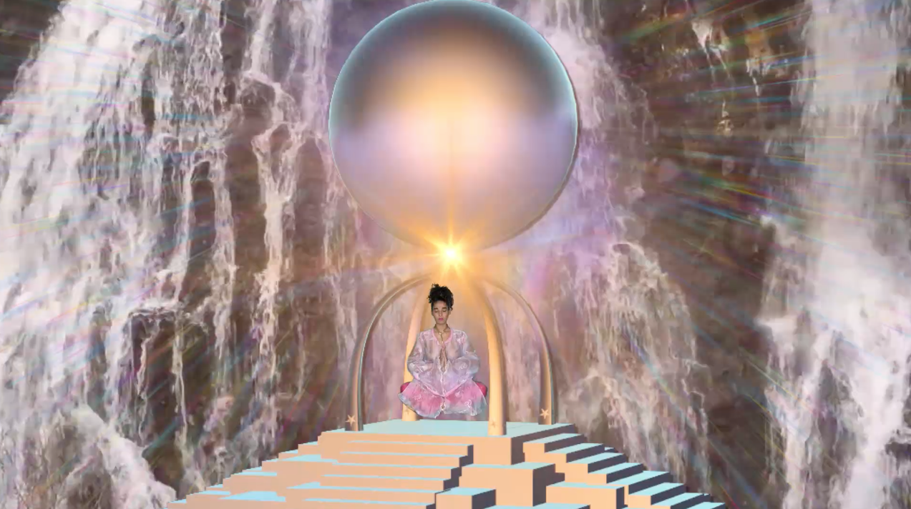
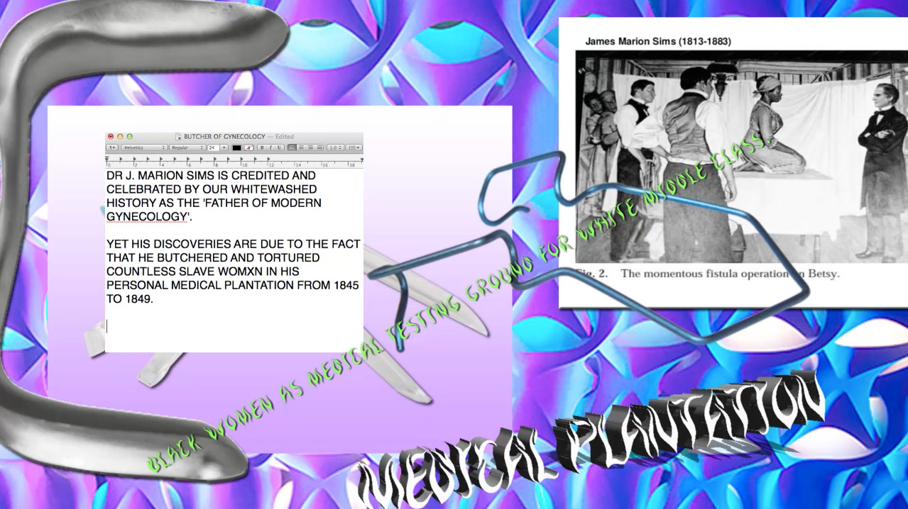
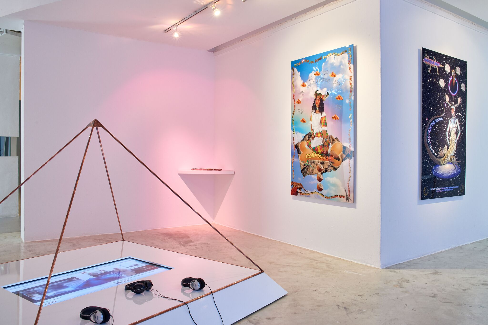
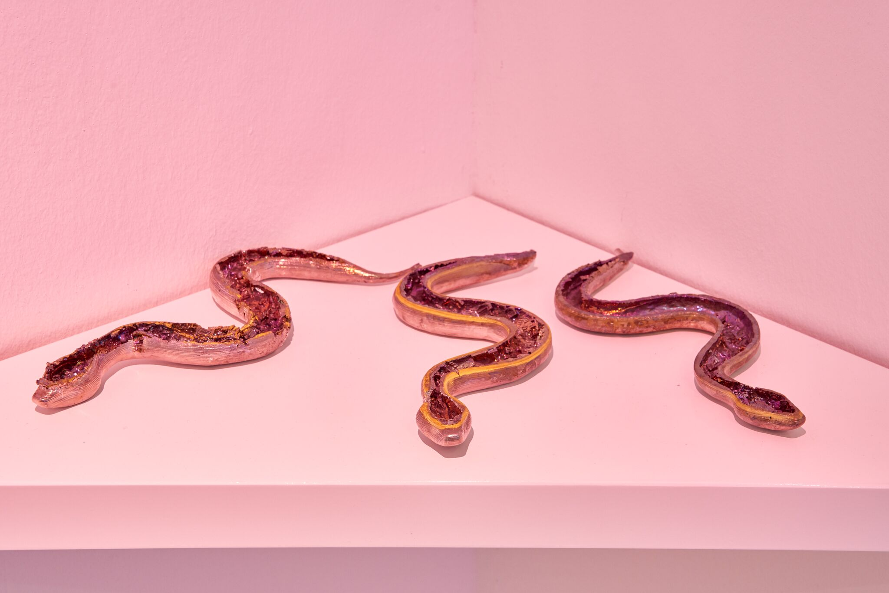
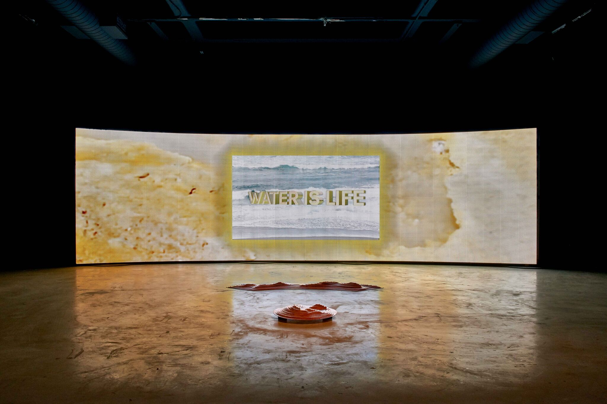

Healing, for me, means aligning. It means aligning with a source, with your own rhythm, with your destiny and your vision. Often we are afraid. We’re just full of fears, full of doubts, full of insecurities, and we’re unable to manifest our vision because we are broken inside. When you’re broken you give birth to broken dreams. So healing is how to allow a flow of infinite creative energy to move through you, with you, and for it to work as you. How can you be yourself, a body in service of the infinite? That’s what healing is for me, right now. It changes as I grow, as I bloom. My healing will transform and my idea of it will transform. But for now that’s how I think about it. Sometimes in my work—my work within the art world, because I have other practices in other worlds—it’s through videos that I share my research, my vision, and my approach to healing. It’s about healing narratives, healing histories, healing tales. I offer stories that could be healing—just to hear them, to see them, to witness them could transform or maybe create something. But I feel that work comes from a process that is somehow head-based because the works are very loaded with information. There’s a lot. Lots of layers—there’s image, there’s sound, lots of stories within stories, and it’s very dense. So, I guess, letting go of the screen is a way for me to maybe engage not so much intellectually with the necessity of healing, but to engage heart to heart. How can I actually give people an experience of healing that’s going to be embodied within them, that they are going to carry with them and share with others? And how will it spread within them? How can you give people more than stories that they keep in their head and can talk about? Or, what is beyond talking? So that’s a different approach. They call it performance, performative work, but for me it’s collective healing; it’s collective experience. It’s an offering. How can we build a collective experience of sharing and knowing? How can we translate information? How can we embody knowledge? How can we carry what we know so it becomes wisdom and not just, “Oh, I know that and that and that…”
It’s a physical shift. It’s a whole being shift. At the same time it’s not so much a shift but an expansion. My mission is one of connection. How do we connect? How does it feel when we connect? And all my videos are trying to find cues and strategies and ways of connecting. Yet through it, I’m talking about connection but not directly connecting with life. So maybe my videos are an intellectual-informational background for the practice of connection.Then comes the offering. It’s like putting into practice the research that my videos contain. It’s a response to a desire for more connection. In a different way, it’s about shifting knowledge centers. And because my work is about decolonizing knowledge structures and knowledge systems, what does it mean to have such content in such form? Now it’s important for me not only to address the content, but also the form of the content. How am I sharing what I’m sharing? What does it look like? What does it feel like? What does that actually create energetically?
Yeah, it creates an experience that’s more embodied. Also, at the end there is this guided meditation that takes you places within yourself. Maybe that’s it—a lot of my video are so informational, they take you places but places outside of yourself. Maybe what I’m interested in at the moment, for myself also, is trying to look at that infinity that’s within. While always trying to search for outer infinity. How do those two infinites connect? Or, what’s the relationship between them? What are they talking about?

With video, it’s a one-way flow. You give, and it’s received, but it’s a delayed process. You are not part of the receiving part, or how it’s perceived. It’s outside of you. But with an offering, when it’s an exchange of energy, the giving and receiving works both ways. It recycles. There’s not as much of a boundary between the maker and the receiver. I do collective offerings, so the people I serve through this energetically are as important to it as I am. It’s a collective process, and we need each other. So, it’s really also about trying to learn or create space to speak about how we can build togetherness. What is being together? What is depending on each other? What’s a community? That’s important for me. It feeds a different part of me. As I said, I think it’s about opening a different knowledge center—a different portal—that is stimulated through those encounters. It creates the space to be surprised. And that’s beautiful—for a work that you birth to have space for something to emerge that you hadn’t planned or didn’t expect, where other people can contribute to the space and co-create.
I started out making documentaries, I still see my work as documentaries, actually. Before there was much more filming involved, but at some point I became so uncomfortable with my images that I couldn’t finish a film. I was paralyzed by my own images, so I had to find a different way to tell the stories I wanted to tell. I felt the camera had too much power. I wasn’t comfortable with the power imbalance between me and the people I was filming. From there I stopped filming other people and I turned the camera on me. I also started this process of denaturing or fragmenting, layering my images, to hide or avoid the fear I had of the recorded image, yet expose the stickiness of it. I guess it’s a defensive strategy.
I think I stick with it and find a way. Because my work is all research based, the form often comes last. I research a topic through different fields, and create a constellation of stories. When I can trace a thread between all stories that I want to share, then I think about what form would honor that tale. Maybe if a form doesn’t work then, yes, I can comfortably let it go and try a different form. But the base is the story and the story I won’t let go.
There are many different kinds—from reading books to looking online to encounters, conversations, visions, intuition, and my own experiences. That’s something that is at the core of it—I need to have an experience of what I’m talking about somehow. That constellation of stories needs to be there somewhere, someplace inside. It must exist in my being.
Often it’s the deadline, to be really honest. Also, research is my favorite part. I could just research forever. But then I actually need to produce. Maybe that’s why the offering part is so beautiful, because each offering/performance is different because it’s a different time, it’s a different space, and I’m a different person. Each day you’re a different person, and because the people you’re doing this with are also different, the work changes. Maybe you’ve found something else that inspired you, so you add it and let the work grow. It grows infinitely, alongside you. With video, it’s set, so it’s harder to add to it even if sometimes you’re kind of like, “Oh my god, I would love to add this.” With embodied practice it’s easier. It grows with me. That’s something I love, especially because my research never ends. It’s ever evolving.
I haven’t had one yet. I’m blessed. What I try to do is to respect my rhythm. That’s something I’m just learning to do. And to not only respond to demands, but to honor my inner timings; when I’m ready to give birth to another work I’ll do it. But I need time for gestation, to download before I can birth something. I try to honor this. That’s why I haven’t experienced a block where I’m like, “Oh my god, I don’t know what to do.” Oh, maybe actually, because now that I’m saying it out loud, I feel like I’ve said that sentence before. [laughs] Maybe that’s when I realized that I needed to honor my rhythm. There was a point where I was really overworking myself. I’d be completely drained. In the long term, it’s not good for your work. It’s not good for the people who experience your work, and the people who commission your work. You’re doing a disservice to the whole. But it’s hard to find that security in yourself and in the world that you’re not going to be abandoned. But it’s okay. You can say no. It doesn’t mean that opportunities will never come back to you. Especially in the art world. It’s a fear that is often entertained. It’s something I’m trying to work out, learning to respect my cycle of birthing and to not base my value only on what I produce.
